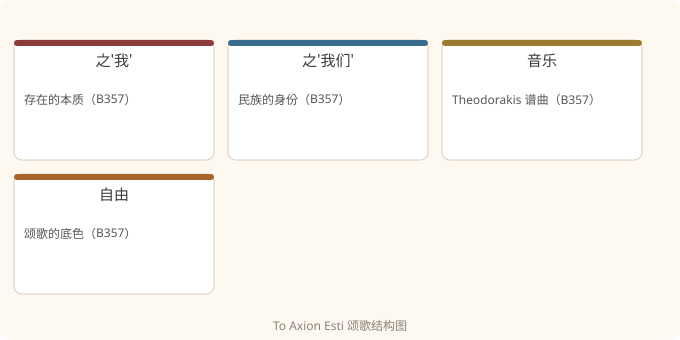

理所应当
一、基本信息
| 作者 | 奥季修斯·埃利蒂斯 |
|---|---|
| 成书/出版 | 1959年（Britannica B357：To Axion Esti (1959)） Odysseus Elytis — Encyclopaedia Britannica（百科全书） |
| 国别/地区 | 希腊 |
| 时代 | 现当代 · 20世纪50年代末 |
| 体裁 | 长诗 |
| 语言 | 希腊语 |

To Axion Esti 颂歌结构图（主题·结构图）
二、创作背景
Britannica（B357）：长诗——'the speaker explores the essence of his being as well as the identity of his country and people'（探索自我存在的本质与其国家、人民的身份）。
Britannica（B357）：Theodorakis 为其谱曲——'became immensely popular and helped Elytis earn the Nobel Prize'。
Britannica（B357）：埃利蒂斯——1979诺奖；受法国超现实主义（尤其艾吕雅）影响。
三、内容脉络
诗体的民族自画像：诗人之'我'与希腊之'我们'（B357：essence of his being...identity of his country and people）。
赞美诗结构的借用（结构通说待核）。
四、主要人物表
| 人物 | 身份 | 说明 |
|---|---|---|
| 言说者 | 诗人之'我' | （B357：the speaker） |
五、主题与艺术特点
- 存在与民族身份的双重探索（B357）。
- 自由的颂歌（B357：anthem to the cause of freedom——1945作语境）。
- 诗与音乐（B357：Theodorakis 谱曲）。
六、影响与评论
- Britannica：1979年诺贝尔文学奖（B357）。
Odysseus Elytis — Encyclopaedia Britannica（百科全书） - Britannica：'became immensely popular'（B357）。
Odysseus Elytis — Encyclopaedia Britannica（百科全书）
七、阅读建议
难点
- 东正教礼拜仪文的结构借用（通说待核）。
- 超现实主义语汇。
- 中译名（《理所应当》/《值得赞颂的》）待核。
- 希腊文原版。
埃利蒂斯首选。
八、待核实
- 中译名两说待核。
- 礼拜仪文结构（'圣咏'说）待核。
- Theodorakis 谱曲年份待核。
本页主要来源
奥季修斯·埃利蒂斯的其他收录作品：理所应当